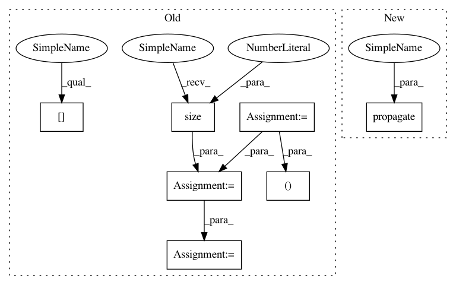

2d64684041ddaa57c8692d7ddc114a408fec3982,torch_geometric/nn/conv/sage_conv.py,SAGEConv,forward,#SAGEConv#Any#Any#,49
Before Change
edge_index, _ = add_self_loops(edge_index, num_nodes=x.size(0))
x = x.unsqueeze(-1) if x.dim() == 1 else x
row, col = edge_index
x = torch.matmul(x, self.weight)
out = scatter_mean(x[col], row, dim=0, dim_size=x.size(0))
if self.bias is not None:
out = out + self.bias
if self.normalize:
out = F.normalize(out, p=2, dim=-1)
return out
def __repr__(self):
After Change
x = x.unsqueeze(-1) if x.dim() == 1 else x
x = torch.matmul(x, self.weight)
return self.propagate(edge_index, x=x)
def message(self, x_j):
return x_j
In pattern: SUPERPATTERN
Frequency: 3
Non-data size: 7
Instances
Project Name: rusty1s/pytorch_geometric
Commit Name: 2d64684041ddaa57c8692d7ddc114a408fec3982
Time: 2019-06-14
Author: matthias.fey@tu-dortmund.de
File Name: torch_geometric/nn/conv/sage_conv.py
Class Name: SAGEConv
Method Name: forward
Project Name: rusty1s/pytorch_geometric
Commit Name: 2d64684041ddaa57c8692d7ddc114a408fec3982
Time: 2019-06-14
Author: matthias.fey@tu-dortmund.de
File Name: torch_geometric/nn/conv/sage_conv.py
Class Name: SAGEConv
Method Name: forward
Project Name: rusty1s/pytorch_geometric
Commit Name: e0f0cf7deb155eff91c306e6ca181c6f9c5ada7d
Time: 2019-04-22
Author: matthias.fey@tu-dortmund.de
File Name: torch_geometric/nn/conv/nn_conv.py
Class Name: NNConv
Method Name: forward
Project Name: rusty1s/pytorch_geometric
Commit Name: 4c0a9a18d780fc62b8606437bbc15d1a68f882ef
Time: 2019-04-29
Author: matthias.fey@tu-dortmund.de
File Name: torch_geometric/nn/conv/gin_conv.py
Class Name: GINConv
Method Name: forward